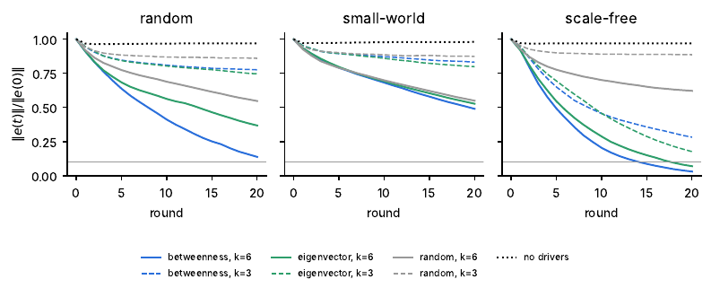
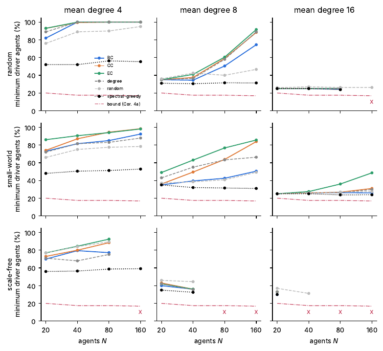
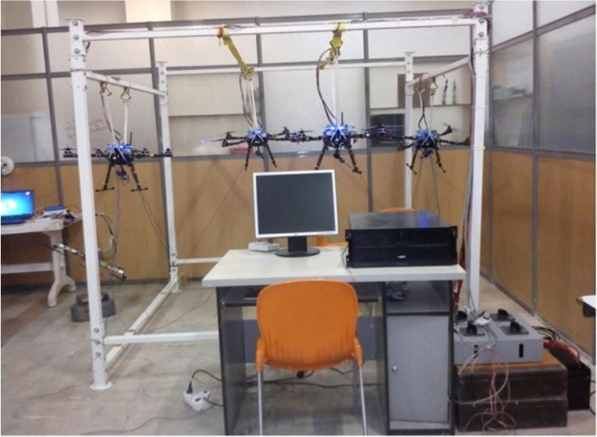
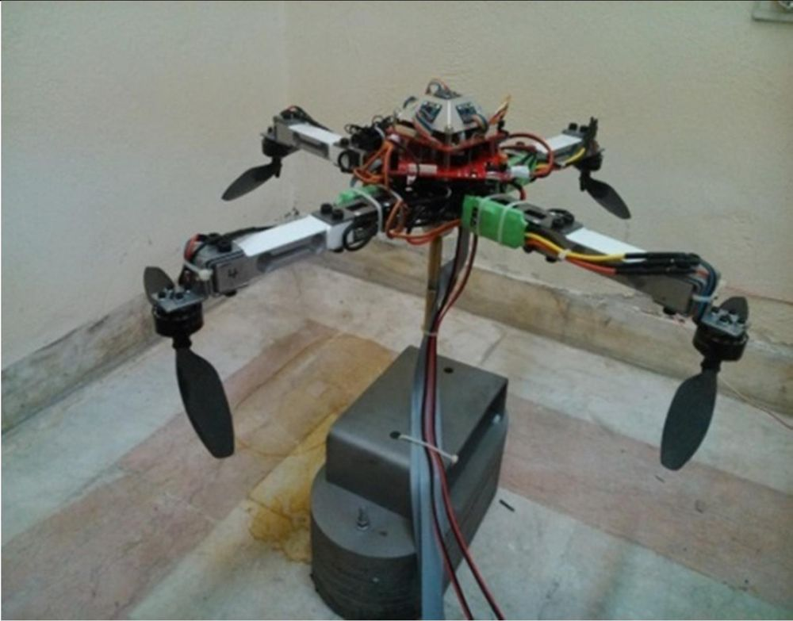

About
My PhD at K. N. Toosi University of Technology developed pinning control and controllability methods for nonlinear complex dynamical networks: which nodes to drive, how many, and with what controller. The answer depends on the network's structure as much as on the dynamics of each node.
I now apply the same ideas to teams of language-model agents. A verifier becomes a control input, the communication graph becomes the network, and the question becomes practical AI oversight: which agents should a verifier correct, and how few are enough for the whole group to reach the right answer?
Along the way I've built hardware testbeds for formation control and synchronization, run experiments with tens of thousands of Claude calls, and reviewed for journals including IEEE Transactions on Neural Networks and Learning Systems and Physics Letters A. I'm a Chartered Engineer (CEng MIMechE) based in Kingston upon Thames, UK.
Research
-

Controllability of LLM Agent Networks ↗
Which agents to verify, and how many. In a pilot with 30 Claude agents and 50,400 model calls, placing verifiers by betweenness centrality cut final error by 13 to 17 points over random placement (p = 0.001). A fitted linear consensus model predicted held-out graphs with r = 0.92.
- Python
- Anthropic SDK
- NetworkX
- SDRE
- Centrality
-

Controlling LLM Agent Collectives
Multi-agent LLM debate modelled as a networked dynamical system: network topology, verifier placement and coordination dynamics, with pilots on GSM8K and AIME. Includes bounds for runaway agents and capture by compromised verifiers.
- Multi-agent LLMs
- Consensus dynamics
- Bootstrap · Wilcoxon
-

Pinning Control of Nonlinear Complex Networks ↗
Synchronization of nonlinear complex dynamical networks by pinning a few nodes with suboptimal SDRE controllers, and selecting driver nodes by network centrality. Published in Nonlinear Dynamics.
- Nonlinear control
- Lyapunov
- SDRE
- MATLAB
-

Networked Control Testbeds
Hardware for testing nonlinear and networked control: a ground–air formation control setup, a quadrotor hardware-in-the-loop rig and a servomotor synchronization platform.
- Formation control
- Synchronization
- HIL
Experience
-
2026 — Present
Independent Researcher · Multi-Agent AI
Controllability and scalable oversight of LLM agent networks. Two manuscripts in preparation, with code and data on GitHub.
- Python
- asyncio
- Anthropic SDK
- Statistics
-
2006 — 2016
Researcher · Mechatronics Research Group, KNTU
PhD research on pinning control, synchronization and controllability of nonlinear complex networks. Built networked-control testbeds and worked on a 7-DOF manipulator.
- Pinning control
- Graph theory
- MATLAB / Simulink
-
2010 — 2016
Lecturer & Teaching Assistant · KNTU
MSc and PhD control courses; co-supervised student projects.
Education
PhD, Mechanical Engineering (control of dynamical networks) · K. N. Toosi University of Technology · 2016
MSc, Mechanical Engineering · K. N. Toosi University of Technology · 2009
Publications
-
2016
Pinning control for synchronization of nonlinear complex dynamical networks with suboptimal SDRE controllers ↗
-
2016
Pinning controllability of dynamical networks based on synchronized motion performance
-
2016
Pinning controllability analysis of dynamical networks based on node centrality
-
2016
Pinning consensus for nonlinearly diffusively coupled multi-agent systems
-
2016
Pinning controllability of dynamical networks based on synchronized motion performance and node centrality
-
2015
AHS fuzzy modelling